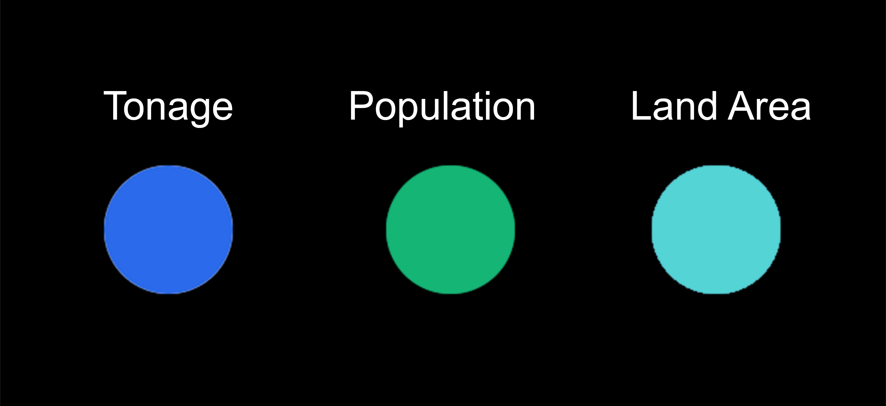

Collecting Efforts from DSNY
Under NYC DSNY operations, there are 59 garages across the five boroughs.

Under NYC DSNY operations, there are 59 garages across the five boroughs.
New York City's 1811 Commissioners Plan laied out the historical groundwork for the garbage issue in the city. This plan, focused on maximizing land value, failed to allocate sufficient space for garbage handling. The issue became increasingly apparent with the city's urban evolution.

Under NYC DSNY operations, there are 59 garages across the five boroughs.
New York City's 1811 Commissioners Plan laied out the historical root of the garbage issue. All lands are used to maximize the land value without considering the space for garbage handlling after urban evelution
According to U.S. Environmental Protection Agency, the average American personnel produce about 5.91 pounds of trash, with about 1.51 pounds being recycled; 4.40 pounds is the rough average daily waste per person.